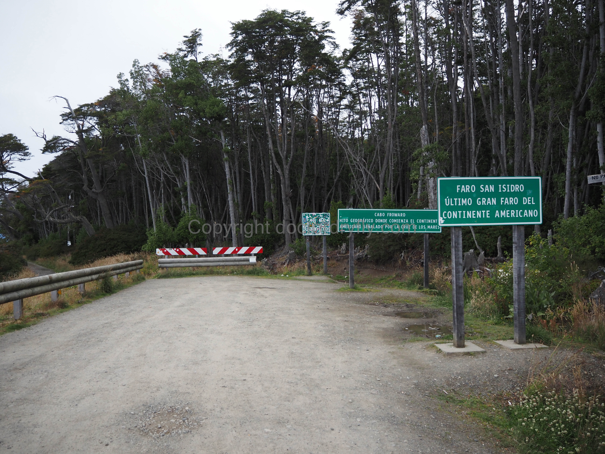
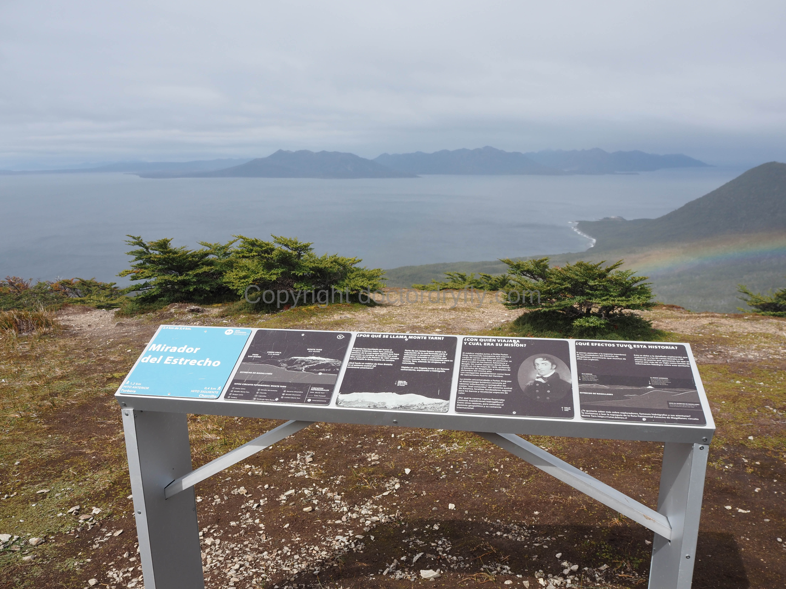
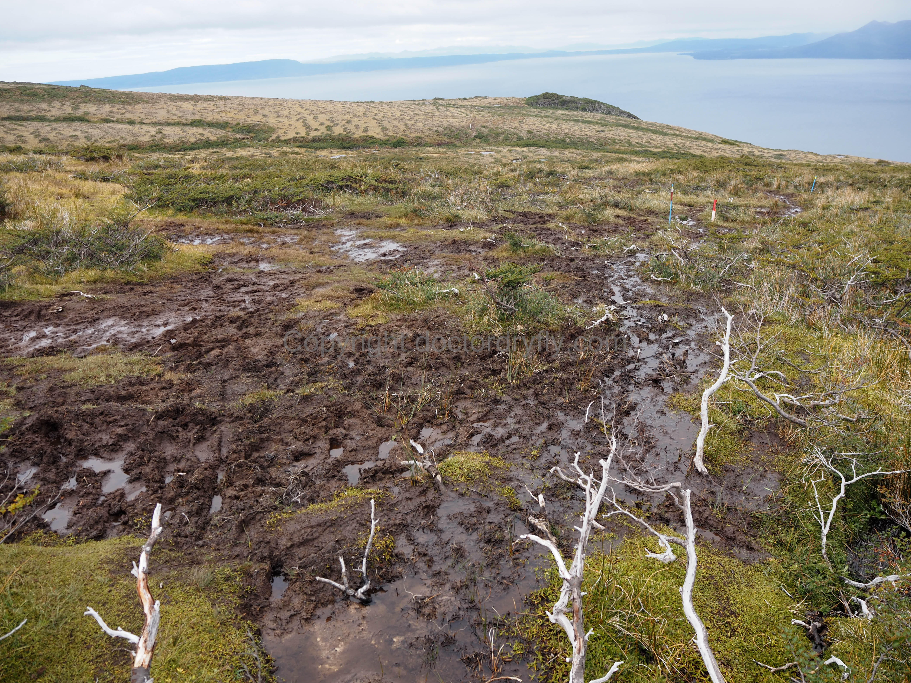
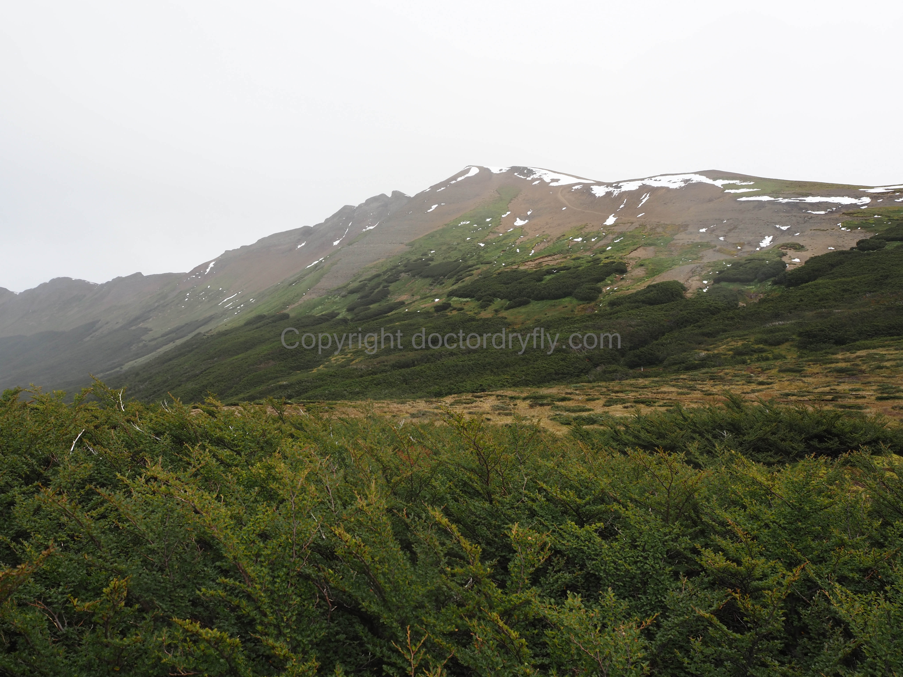
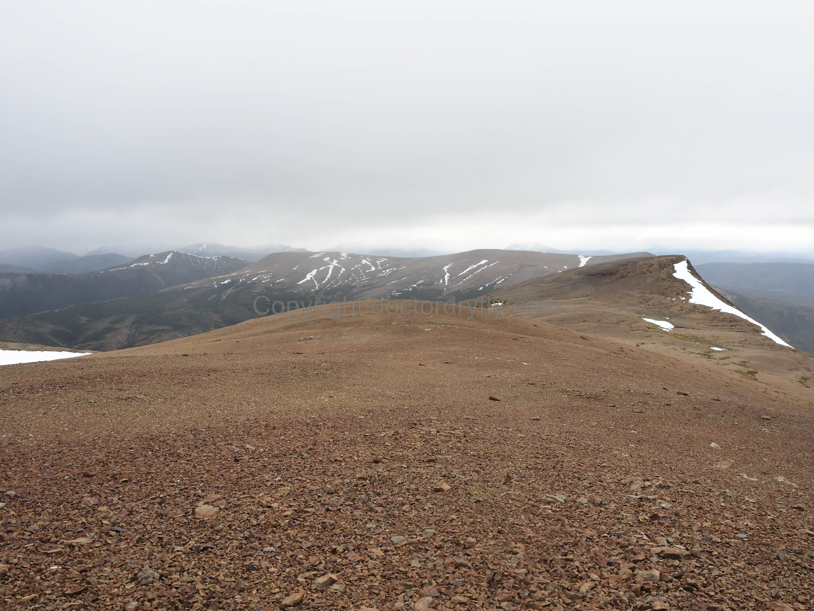
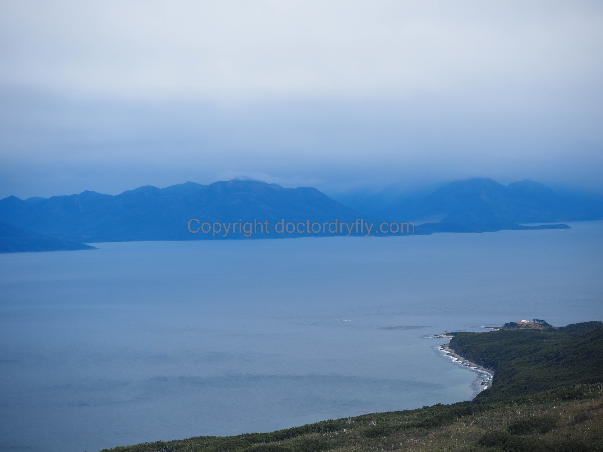
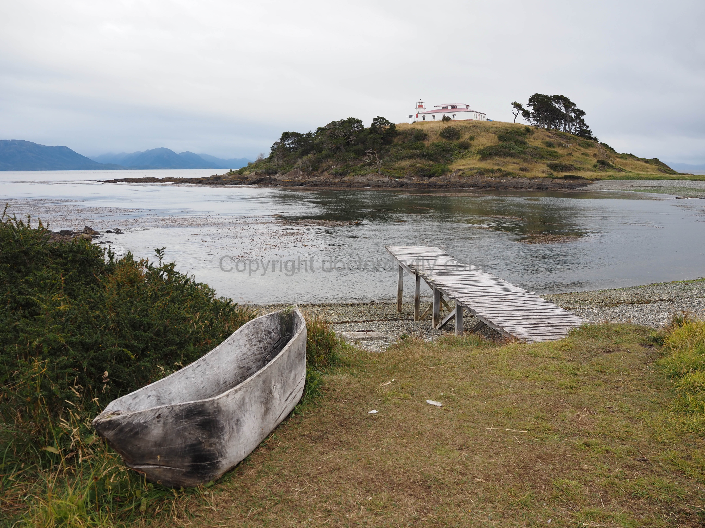

Mt. Tarn and Faro (Lighthouse) San Isidro Hikes
For killing a day in Punta Arenas (maybe while you wait for your bags to arrive), hiking Mt. Tarn and/or to the lighthouse is a good option. Both hikes begin from the same parking lot and can be done separately or together. While neither hike is particularly long, the combination of them together is a good warmup for the O. And, we were surprisingly tired after completing both due to the trail conditions and elevation gain up to Mt. Tarn and the sandy beachwalk to the lighthouse.
Logistics
You’ll need a car to reach the parking lot, which is about an hour down the coast (south) from Punta Arenas. We had pre-booked a rental car from the airport, and took a taxi back to the airport to pick up the car. Though there are rental car options in town, they were sold-out by the time we booked. I suspect it is possible to hitchhike to the trailhead parking lot as there was a decent number of cars headed down there, but it might be tough to find a ride back to town. There is no public transportation as far as I know.
The drive down the coast is scenic, with views of the Magellan Straight and the low inland hills. The road turns into dirt a few miles from the parking lot, but it’s in good condition and four-wheel drive was not necessary. The parking lot is obvious as the road dead-ends and there are signs indicating the end of the road and the cape. There will likely be other cars parked here as well. Park your car here and start walking down the road.
 The sign at the end of the road indicating that San Isidro is the most southern lighthouse in the Americas. The last sign with stickers says, “Fin de Camino.”
Mt. Tarn Hike
It isn’t immediately obvious where the trail to Mt. Tarn is, but after walking a short distance down the road paralleling the ocean (maybe .25 miles), there will be a sign and trail on the right with some stairs leading away from the ocean into the forest. This is the start of the Mt. Tarn hike. Caltopo says it’s about 3.14 miles and 2,600 feet to the top, which is consistent with our experience. It sounds steep, but it really wasn’t as bad as it seems on paper.
The trail climbs very steeply through the forest before emerging onto a flat-ish plateau a bit above the ocean. There are signs and poles marking the trail, but there are also a lot of side trails made from hikers avoiding mud. The mud is definitely a thing on this hike as it very bad and exists nearly the entire way up. In fact, it gets worse the higher you climb. So though it’s easy to not know if you are on the official trail, it’s easy to figure out where you should be going. The signs along the trail also tell you the distance you’ve come and where the next sign is, so I consider it almost impossible to get lost.
 These signs exist every so often on the way up to Mt. Tarn, making it easy to follow the route.
After briefly emerging on the plateau, the trail dips into a thick forest. The trail is really destroyed here, and there is some deadfall which makes the going slow. This section is short however, and the trail once again emerges from the trees. From here it continues uphill, cuts across flat bogs, goes uphill more, and cuts across a boggy/lagoon area. The mud is so, so bad. The good news is that Mt. Tarn is obviously getting much closer and one can begin to see the hike up the slopes of the mountain.
 The mud and boggy-ness is really bad. Bring extra shoes to change into for the return drive to Arenas.
 Mt. Tarn as seen from the trail. The brown streak across the face looks like a trail but is not.
The last section up the slopes of Mt. Tarn is steep, but at least it isn’t muddy (mostly). The real problem for us here was the wind. No surprise, it was blowing hard and made things just spicy enough to be interesting. There isn’t any exposure but walking uphill directly into the wind with little ice pellets pelting down was uncomfortable. I don’t know how hard the wind was blowing, maybe 40 or 50 miles per hour?
We didn’t actually make it to the summit, but instead reached the shoulder of Mt. Tarn. It was simply too windy to continue, especially once we reached the ridge of the mountain. The views here are very good, and it’s cool being on a mountain that Darwin supposedly climbed when the Beagle visited the area.
 View looking north from the shoulder of Mt. Tarn below the summit.
 View looking south toward the Straight. San Isidro lighthouse at bottom.
Faro San Isidro
I can make this short and sweet. From Mt. Tarn, return to the road the same way. From the road, begin walking south away from the parking lot. This is almost entirely a beach walk which means walking through sand. It’s about 2.5 miles (2.87 according to Caltopo), which makes the roundtrip about 5.74. Add that to the 6.28 miles to the top of Mt. Tarn and back, and it’s a 12 mile day that is not that easy given the elevation gain, the mud, and the sand.
The lighthouse is interesting. It’s not open, but you can walk around the grounds and get some good views of the Straight and the mountains to the northwest. All in all, this is a good warmup hike for the O and a good way to spend a day in the Punta Arenas area.
 Approaching the lighthouse.